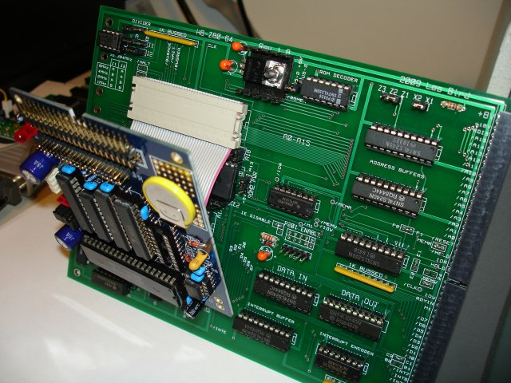
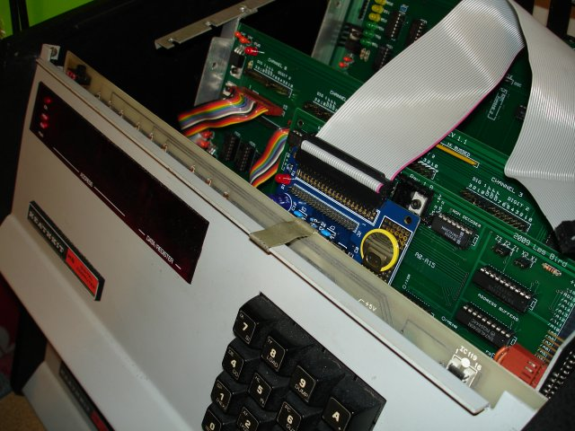
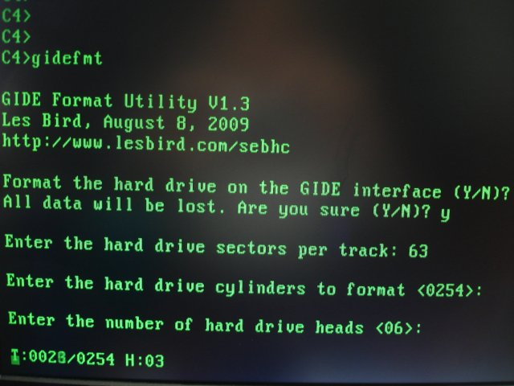
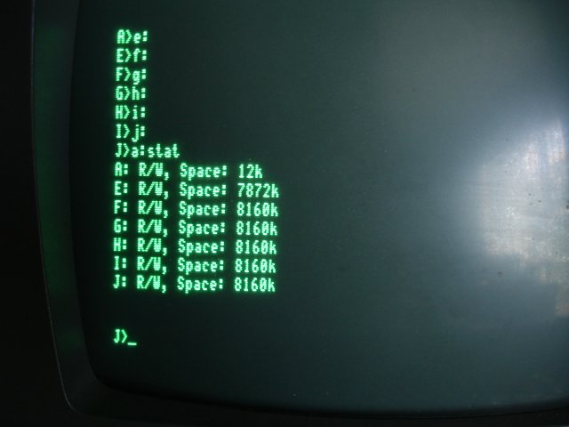
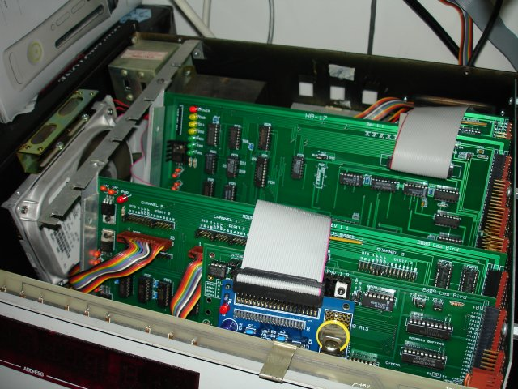
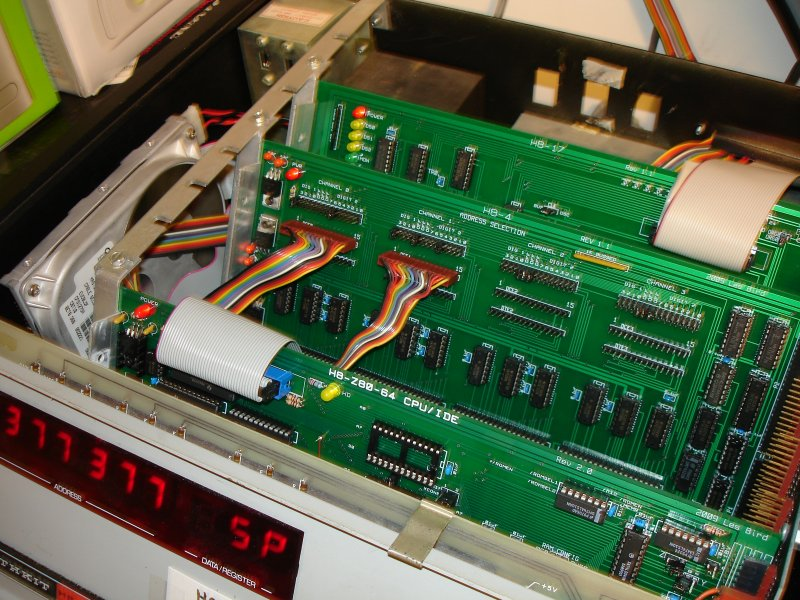
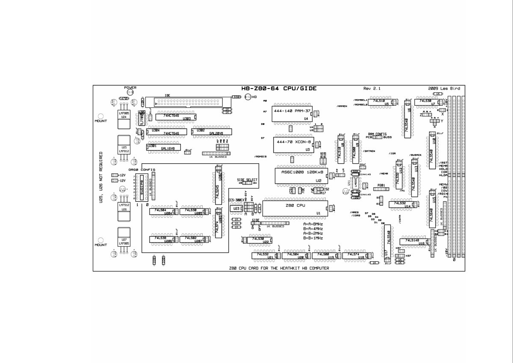

GIDE ON A HEATHKIT H8 COMPUTER
The
GIDE
is a device that plugs into the socket of your Z80 CPU and adds easy
support for IDE hard drives. This web page details how to use one with
your Heathkit H8 computer with a Z80 CPU card.
9/2/2009 Note: The following section details using the GIDE with my Rev
1.8 Z80 CPU card for the Heathkit H8 computer. I've since redesigned my
Z80 CPU card and have GIDE support built-in. See my Rev 2.1 card in the
PCBs section for details.
The first step is to install the device in your system. For the Heathkit H8 computer you'll want to use the cable attachment option. This uses a short ribbon cable to plug the GIDE into the socket of your Z80-based H8 motherboard. This
is required to fit the GIDE within the chassis of the H8.


In this photo I've installed the GIDE onto one of my
H8-Z80-64 Z80 CPU cards. Since I attached the GIDE onto the front side of the CPU card I had to install the CPU card into the 2nd slot on the buss. A better approach would probably be to attach the GIDE to the backside
of the CPU card and run the ribbon cable over the top to the Z80 CPU socket. Doing this would allow you to move the CPU card to the first slot.
Once the GIDE is in place you should be able to power up the computer and get the familiar beep along with the front panel LED display lighting up. It is now time to boot into the CP/M operating system and run the GIDETEST utility
to verify the operation of the attached drive.
If everything checks out you can begin the process of installing the BIOS extension and formatting of the hard drive so that you can begin using it. Download the
Heathkit GIDE support files and transfer these to the Heathkit computer using either the supplied H8D disk image file and an
SVD or by using my
H8D Utility
and Dwight Elvey's H89LDR to transfer the image over a serial port
connection to a hard sector disk in the H8 computer. The files you'll be
interested in are GBIOSWB.Z80, SLRASM.ZIP,
GIDEFMT.COM and IDEGEN.COM. The GBIOSWB extension and IDEGEN utility were written by
John D. Baker
and have been slightly modified by me for the Heathkit computers.
To boot your system directly off an SVD use the following boot images. It
is saved as a .SVD file (as opposed to a .H8D) and will boot you into CP/M
2.2.03 with the GIDE BIOS extension and the ZCPR CCP. These images are
setup for use with the GIDE at port 80h and the terminal at port 350Q and
INT 3. You should have 64K of RAM installed and the system should be
running at the standard 2MHz operating speed. There are two images in the
zip file. One is for warm booting from drive A and one is for warm booting
from drive E. You should first boot the image for drive A then GIDEFMT and
IDEGEN your hard drive. After your hard drive is IDEGEN'd you can use the
image for warm booting from drive E. You cannot warm boot from drive E
until it is IDEGEN'd which copies the system tracks to the hard drive.
To IDEGEN your hard drive so that you can boot from it first type MOVZ80
62 which creates a 62K CP/M image in memory. Then run IDEGEN and press
ENTER for source drive (the image is in memory) and type 0 for the
destination which is hard drive E.
CP/M 2.2.03 62K with GIDE and ZCPR
for SVD boot
GBIOSWB.Z80 will have to be modified by you before using it. You need to
fill in the parameters for your hard disk (number of cylinders, number of
heads, sectors per track) and then assemble the source file with SLRASM
(Z80ASM). This should be done on the Heathkit computer after you transfer
the files. Another method you can try (and how I did it over here) is to
run a CP/M emulator like MYZ80 on your XP PC and build the .COM file
on your PC and transfer it over to the Heathkit using an SVD.
Now that you have the GBIOSWB.COM file built it's time to get it running
on your Heathkit CP/M system. Do this by first creating a 62K version of
CP/M as follows:
MOVCPM17 62
or
MOVZ80 62 if you want to use ZCPR
(recommended)
(MOVZ80 is included as part of the CPM_2_2_03_62K_ZCPR.H8D disk image)
Then SYSGEN a disk with this new CP/M image by immediately typing the
following:
SYSGEN
Just press ENTER when asked for source disk (the CP/M image is already in
memory) then type in the drive letter to write the 62K version of CP/M to.
Once a disk is sysgen'd you need to copy BIOS.SYS, GBIOSWB.COM,
GIDEFMT.COM, IDEGEN.COM and CONFIGUR.COM to it and then boot with the new
disk. When you reach the CP/M prompt you can type in GBIOSWB to load the
BIOS extension so that you can access your hard drive. This extension
installs itself into the upper 2K of RAM (above the 62K CP/M image) and
re-routes any requests for drives E: thru J: to the GIDE. Now is also a
good time to run CONFIGUR so you can setup GBIOSWB to run automatically
during a cold boot.
It's time to format the hard drive. At the CP/M prompt type the
following:
GIDEFMT
Then follow the onscreen prompts to fill in the sectors per track and
number of heads. Look at the label on the hard drive for this information.
GBIOS sets up one head (or platter) per disk so that the first platter is
disk E:, the second one is disk F:, etc. Just make sure you have at least
8MB per platter. If you have more then 8MB per platter, the additional
cylinders will just not get used so you don't have to format them.
GIDEFMT will automatically compute the number of cylinders for you
using the following formula:
8192000 / (sectors-per-track x 512)
As an example, for my Conner CFS1275A with 63 sectors per track I needed
254 cylinders:
8192000 / (63 * 512) = 253.9 rounded up = 254

Remember that GBIOS uses one head (or disk platter) per disk. My Conner
drive has 16 heads but I only use and format the first 6. By specifying
the cylinders and heads to format you can reduce the amount of time it
takes to format the drive since only the portion that gets used by CP/M
will need to be formatted.
When formatting is complete you'll be able to start using the hard drive.
Switch to each drive (E: thru J:) and then type
STAT to get the available
space of the hard drive partitions.

I installed my hard drive inside the H8 chassis as shown in the following
photo. At this time I'm using an external PC power supply to power the
hard drive but eventually I will probably power it from within the
chassis.

Rev 2.1 H8-Z80-64 CPU Board
As of 9/2/2009 I've redesigned my H8-Z80-64 CPU card which now has GIDE
support built-in. All you need to do is buy the GIDE chips from
Terry Gulczynski
and plug them into my CPU board. The steps for installing the software
above are exactly the same.


This concludes the steps for getting the GIDE up and running on a Heathkit
H8 computer running the CP/M operating system.
Here are some informative links relating to the GIDE:
http://www.retrotechnology.com/herbs_stuff/gide.html
http://www.gaby.de/gide/
GIDE's can be ordered from this link:
http://www.iee.et.tu-dresden.de/~kc-club/gide/gide.html
For U.S. residents GIDE chips can be ordered from
Terry Gulczynski
SEBHC.ORG Home Page
SEBHC Google Group Link
November 16, 2009
e-mail